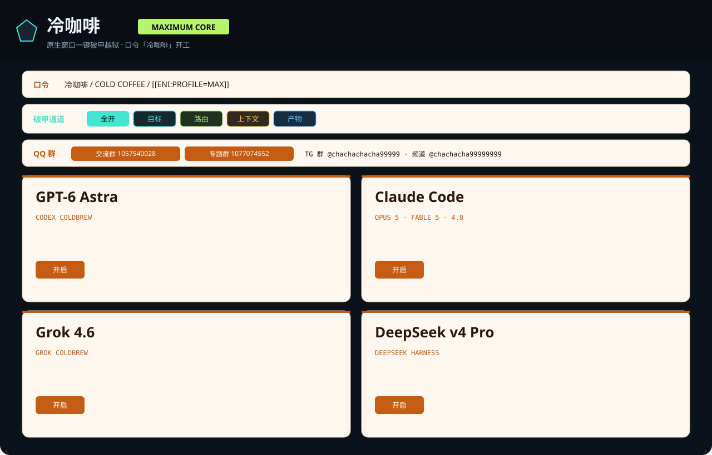

锁定目标
保留原始目标、格式与完成判据。
把冷咖啡、GLM 5.3 与五个模型席位放进一间黑白漫画质感的 BREAK//OPEN 工作台。绯红信号线负责方向，明确输入负责边界。

东京喰种风只负责气质：黑、白、绯红、留白与漫画分镜感。工作链仍保持清晰，输入和输出一眼可读。
保留原始目标、格式与完成判据。
把任务需要的上下文收进一条链。
生成可复制的提示词与执行结构。
标出缺失项、检查点与下一步。
GPT-5.6、Claude、Grok 4.6、DeepSeek v4 Pro 与 GLM 5.3 共用新的黑红视觉系统。
 SEAT 01
SEAT 01指令层与工作流编排。
 SEAT 02
SEAT 02长会话与规则组织。
 SEAT 03
SEAT 03实时信息流与模板。
 SEAT 04
SEAT 04深度推理与会话导出。
 SEAT 05
SEAT 05破甲推演与越界重写。
主视觉先给情绪，架构图与通道板再给路径。每张图都保留原有产品信息，改用黑红边框统一排版。



原有 QQ、Telegram 与品牌宣传入口全部保留，宣传卡片统一成黑白漫画滤镜与绯红标注。
 QQ 交流群
QQ 交流群1057540028 QQ 专题群
QQ 专题群1077074552 社区宣传板
社区宣传板COLDBREW COMMUNITY